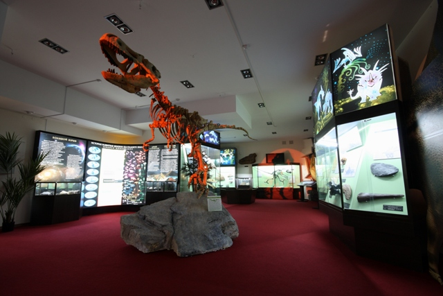
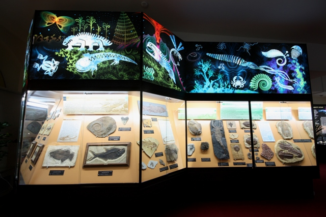
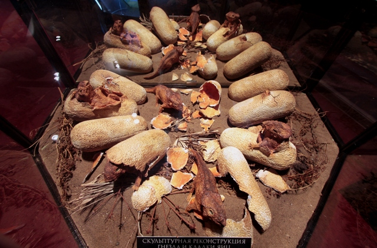

В самом центре города Киров располагается Вятский палеонтологический музей, который занимает одно из красивейших городских зданий, построенное не так давно. Посетителям Вятского музея предстоит совершить увлекательную экскурсию, словно возвращающую их в прошлое, в мир древних ящеров и динозавров, которые обитали на планете более 260 миллионов лет назад..
В Кировской области, неподалеку от города Котельнич, начиная с 1933 года, периодически проводятся исследовательские работы. При раскопках были найдены останки парейазавров и ряда других доисторических рептилий. Данные находки имели большой вес в научном мире и явились достаточно веским основанием для создания музея. Многие экспонаты, которыми располагает Вятский палеонтологический музей, представляют большую ценность с научной точки зрения и не имеют себе равных в мире. Ежегодно сотрудниками музея проводятся научные исследования на территории Котельничского местонахождения парейазавров, которое имеет статус государственного памятника природы. Здесь происходит сбор останков ископаемых ящеров, камеральная их обработка, а также дальнейшая научная интерпретация и помещение в экспозицию.
Первый зал Вятского палеонтологического музея отдан под экспозицию, посвященную истории развития жизни на планете. Здесь в увлекательной и захватывающей форме представлены различные доисторические события.Центральной фигурой зала является уникальный экспонат, который был найден советско-монгольскими учеными в самом центре пустыни Гоби. Этот совершенно целый скелет длиной 6 метров принадлежит хищному динозавру тарбозавру, который обитал 74 миллионов лет назад.
Не менее внушительно смотрится и тираннозавр, реконструированная голова которого выставлена в экспозиции музея. Разнообразные археологические находки – динозавры, летающие ящеры, обитавшие в период мезозоя, помогают создать в экспозиции удивительную иллюзию погружения в те далекие времена, когда родная планета имела абсолютно другой облик.
Во втором зале музея перед посетителями предстает фауна Котельничского местонахождения парейазавров. В этом уникальном природном объекте уже многие десятилетия находятся новые подтверждения разнообразного животного мира, существовавшего на заболоченных равнинах пермского периода. Фоном для экспозиции в этом зале служат величественные пейзажи древней дельты.Перед глазами посетителей разворачиваются картины древней истории, которая предшествовала эпохе появления динозавров. Гигантские хвощи-каламиты и древовидные папоротники скрывали в своих зарослях несметные стада парейазавров, тероцефалов, горгонопсов и других необыкновенных рептилий, скелеты которых и были найдены на территории современной Кировской области, близ города Котельнич.

Не так давно Вятский палеонтологический музей пополнил свою экспозицию новым экспонатом. Посетители музея теперь смогут осмотреть скульптурную реконструкцию, представляющую собою гнездо динозавров протоцератопсов, которые обитали более 75 миллионов лет назад на землях, где сейчас располагаются Китай и Монголия. Достоверно известно, что размножение динозавров происходило так же, как происходит сейчас у современных рептилий, то есть с помощью кладки яиц. В ходе раскопок в пустыне Гоби палеонтологи нередко находили остатки скорлупы яиц динозавров, а иногда и уцелевшие кладки, которые, конечно, со временем превратились в окаменевшие. Но в ряде случаев, ученым удалось расчистить и извлечь из яиц крошечные скелеты не родившихся динозавров.
